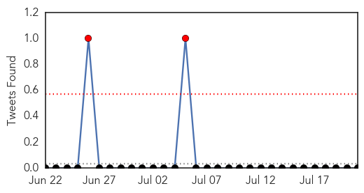
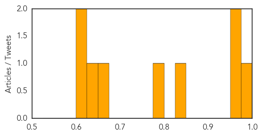
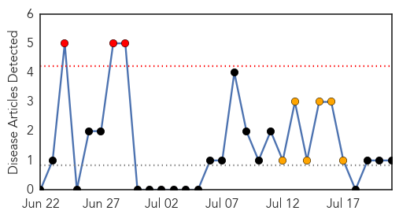
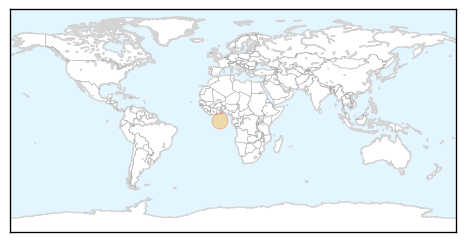

Dengue Fever
30-Day Web Trend
0 alerts, 8 warnings

30-Day Twitter Trend
2 alerts, 0 warnings

Article Locations

Article Confidences
Top Articles:
- 0.982
- Goa witnesses 99 cases of dengue in 7 months
- 0.973
- The Dengue alarm is on
- 0.967
- Mosquito Borne Diseases Loom Large on Hyderabad
- 0.847
- American Samoans told to throw out stagnant water to curb dengue
- 0.796
- News reader
- 0.667
- Scores spent festival in hospitals
- 0.634
- Taiwan reports 38 ‘locally acquired’ dengue cases in past week, health officials mobilize to support elimination of mosquito breeding sites
- 0.605
- First dengue death in Ahmedabad of 2015
- 0.603
- ‘104-service’ vehicles to create awareness on dengue
Top Tweets:
- 0.585
- Flavivirus news: Dengue cases increase in 4 Cordillera provinces - CNN: Dengue cases increase i... http://t.co/8QlkER3RDd pathogenposse
Pertussis
30-Day Web Trend
3 alerts, 6 warnings

30-Day Twitter Trend
0 alerts, 0 warnings

Article Locations
Article Confidences

Top Articles:
Top Tweets:
-
No tweets found for Jul 21, 2015